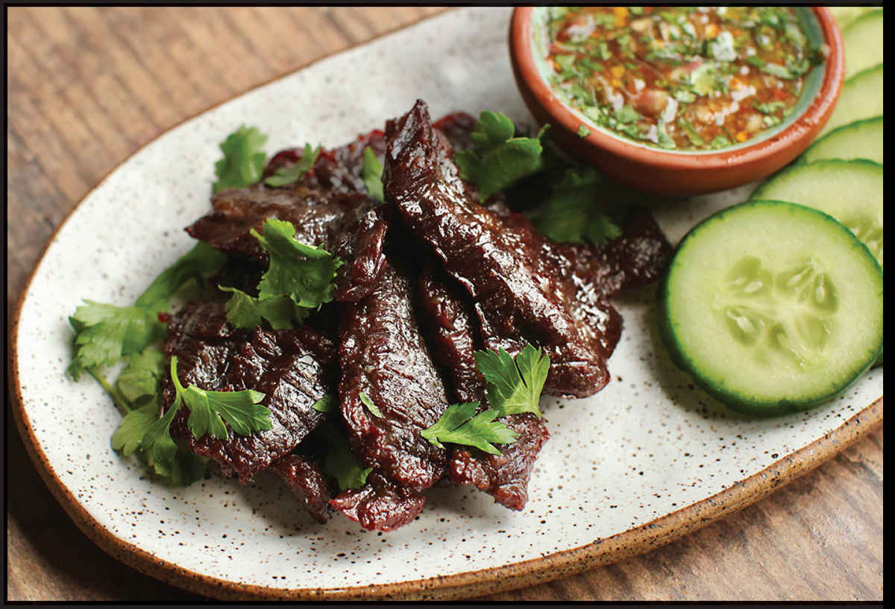

NUA KEM (THAI-STYLE BEEF JERKY)
|
Yield Serves 3 to 4 as a snack or appetizer |
Active Time 20 minutes Total Time 5 to 6 hours total if using sun-drying method, 2 to 3 hours total if using the oven |
The initial marinating and drying steps can be done up to several days in advance, leaving just the final dry-fry step before serving. This dish is typically served with jaew, sticky rice, som tam (green papaya salad; here), but it is equally tasty with many other dipping sauces, such as Nam Pla Prik (here), sukang sawsawan (here), or your favorite bottled sriracha (I recommend Shark brand).
When Nua Kem appears on menus in Thai restaurants in the West, it’s almost always described as “Thai Beef Jerky,” but this is not an accurate description, as it is far juicier than any preserved beef snack I’ve ever had. It’s made by marinating beef strips in a mixture of soy sauce, fish sauce, and sugar, letting the beef strips dry in the sun until the marinade forms a dry pellicle (an oven at its lowest setting works fine if you are squeamish about leaving raw meat outside in the sun), then deep frying it until the surface is deeply caramelized with a texture that’s halfway between crispy and chewy and a juicy, flavorful core. The dehydrated surface of the beef makes it a perfect sponge for soaking up a flavorful jaew dipping sauce (here).
INGREDIENTS
2 teaspoons (10 ml) light soy sauce or shoyu
2 tablespoons (30 ml) fish sauce
1 tablespoon (12 g) palm, light or dark brown, or granulated sugar
½ teaspoon (2 g) freshly ground white pepper
1 pound (450 g) flank or skirt steak, cut against the grain into ½-inch slivers
2 cups (480 ml) peanut, rice bran, or other neutral oil
1 recipe Jaew (here) for dipping

DIRECTIONS
1 In a medium bowl, combine the soy sauce, fish sauce, sugar, and white pepper until the sugar is dissolved. Add the beef strips and toss to coat thoroughly.
2 Spread the beef out onto a wire rack set in a rimmed baking sheet. If the weather is hot and sunny, place the beef outside in the sun, flipping every 45 to 60 minutes, until the surface feels dry to the touch. Alternatively, place the beef in an oven preheated as low as it will go (aim for a minimum of 125°F and a maximum of 175°F, the lower the better) and let it dry out, turning every 30 to 45 minutes, until the surface feels dry to the touch. Proceed immediately to step 3 or transfer the beef to a sealed container and store in the refrigerator for up to 5 days before proceeding.
3 When ready to serve, heat the oil in a wok over high heat until it registers 325°F on an instant-read thermometer. Add the beef and cook, stirring it constantly and adjusting the heat to maintain a temperature between 275° and 325°F, until it is well browned and crisp at the edges but still pliant, about 5 minutes. Transfer to a paper-towel-lined plate to drain. Serve immediately with jaew.